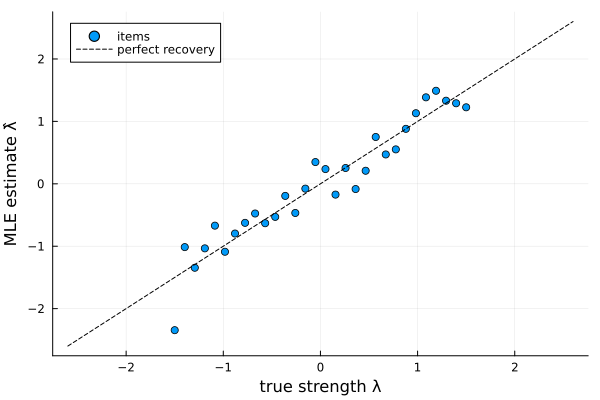
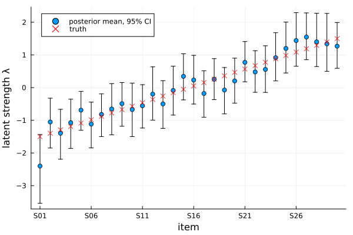

Bradley–Terry models
The Bradley–Terry model describes pairwise comparisons between items. Each item $i$ has a latent strength $\lambda_i$, and the probability that it wins a comparison against item $j$ is
\[P(i \text{ beats } j) = \frac{1}{1 + e^{-(\lambda_i - \lambda_j)}}.\]
This page fits the plain Bradley–Terry model two ways on one simulated dataset:
- Maximum likelihood (
MLE) — fast point estimates of the strengths, good for ranking items. - Bayesian (
Bayesian) — a Pólya-Gamma augmented Gibbs sampler giving full posterior distributions, so you also get uncertainty for every strength and win probability.
Three extensions build on it, each with its own page: the anchored model calibrates the latent scale to real measurements, the covariate model explains strengths with item covariates, and the anchored covariate model combines both.
Simulating comparison data
We simulate 30 items with known, evenly spaced strengths and 600 comparisons in total, each between a randomly chosen pair of items. This is the typical comparative judgement regime: with 435 possible pairs, most pairs are compared only once or twice and some never meet at all:
using ComparativeJudgement
using Random
using Plots
rng = MersenneTwister(42)
labels = ["S" * lpad(i, 2, '0') for i in 1:30] # S01 … S30
n = length(labels)
λ_true = collect(range(-1.5, 1.5, length=n)) # S01 weakest … S30 strongest
logistic(x) = 1 / (1 + exp(-x))
n_comparisons = 600
wins = zeros(Int, n, n)
for _ in 1:n_comparisons
i = rand(rng, 1:n)
j = rand(rng, 1:n-1)
j = j >= i ? j + 1 : j # distinct random pair
if rand(rng) < logistic(λ_true[i] - λ_true[j])
wins[i, j] += 1
else
wins[j, i] += 1
end
end
data = PairwiseData(wins, labels)wins[i, j] counts how often item i beat item j; PairwiseData pairs the matrix with the item labels, which can be any type (strings, symbols, integers, …).
Maximum likelihood
fit takes the model, the inference method, and the data:
fitted_mle = fit(BradleyTerry(), MLE(), data)
fitted_mle.convergedtrue(fit(BradleyTerry(), data) is a shorthand for the same thing.) strengths returns the estimated $\hat\lambda$, centred to sum to zero — directly comparable to λ_true:
λ̂ = strengths(fitted_mle)
scatter(λ_true, λ̂;
xlabel="true strength λ", ylabel="MLE estimate λ̂",
label="items", legend=:topleft)
plot!(identity, -2.6:0.1:2.6; linestyle=:dash, color=:black, label="perfect recovery")
The estimates scatter around the diagonal with no systematic distortion — the spread is sampling noise from ~40 comparisons per item (the fit agrees with R's BradleyTerry2 to solver precision on this data).
Ranking the items is a sortperm away. With only 600 comparisons the recovered order is close to the truth (S30, S29, …, S01) but adjacent items — separated by just 0.10 on the latent scale — do swap:
labels[sortperm(λ̂, rev=true)]30-element Vector{String}:
"S27"
"S26"
"S28"
"S29"
"S30"
"S25"
"S24"
"S21"
"S23"
"S22"
⋮
"S08"
"S10"
"S05"
"S07"
"S02"
"S04"
"S06"
"S03"
"S01"probability gives fitted win probabilities, by label or by index, and loglikelihood the log-likelihood at the estimate:
(probability(fitted_mle, "S30", "S01"), loglikelihood(fitted_mle))(0.9726529881456617, -327.4487653376153)Bayesian inference
The Bayesian fit runs a Gibbs sampler (Pólya-Gamma augmentation makes every update conjugate) and returns posterior draws instead of a point estimate. Bayesian controls the run: n_samples, n_burnin, thin, and center (each sweep re-centres $\lambda$ to sum to zero, fixing the location that the likelihood leaves free). The prior on $\lambda$ is a NormalPrior, by default $N(0, 10 I)$:
method = Bayesian(n_samples=2000, n_burnin=500)
fitted_bayes = fit(BradleyTerry(), method, data, NormalPrior(n); rng=rng)Posterior summaries come from posterior_mean, posterior_std, and credible_interval. Plotting the posterior means with their 95% credible intervals against the truth makes the sparsity visible: roughly 40 comparisons per item leave each strength known only to within a few tenths, and nearly all intervals straddle the true values:
post = posterior_mean(fitted_bayes)
ci = [credible_interval(fitted_bayes, k; prob=0.95) for k in 1:n]
lo, hi = first.(ci), last.(ci)
scatter(1:n, post;
yerror=(post .- lo, hi .- post),
xlabel="item", ylabel="latent strength λ",
xticks=(1:5:n, labels[1:5:n]),
label="posterior mean, 95% CI", legend=:topleft)
scatter!(1:n, λ_true; marker=:x, color=:red, label="truth")
credible_interval(fitted_bayes, 1; prob=0.95) # 95% CI for item S01's strength(-3.5401185295845594, -1.436053596512931)For Bayesian fits, probability returns the posterior mean win probability, which accounts for the uncertainty in the strengths:
(probability(fitted_bayes, "S30", "S01"), probability(fitted_bayes, "S16", "S15"))(0.9698713143911405, 0.4734353065407722)